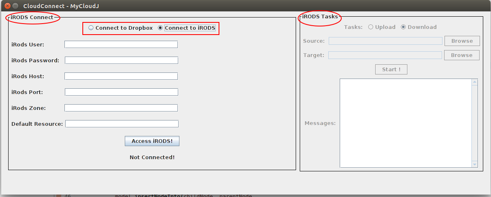
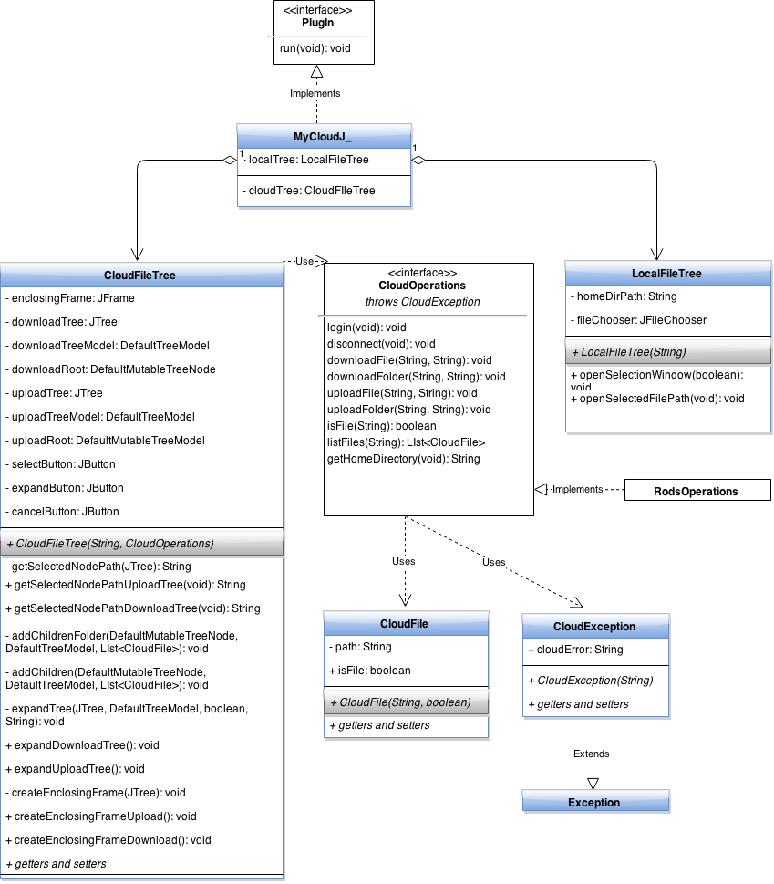

Developers
Student: Doru-Cristian Gucea
Mentor1: Dimiter Prodanov
Mentor2: Visakh Muraleedharan
Organization:
International Neuroinformatics Coordinating Facility
Project description
ImageJ is a public domain Java image processing program designed with an open architecture that provides extensibility via Java plugins. The aim of this project is to develop an ImageJ plugin which can be used to download/upload datasets from/to iRODS (Integrated Rule-Oriented Data System), an open source data management software used by the research community in order to take control of their data, regardless of where and on what device the data is stored
Re-factoring
My project is forked from Atin's repository: https://github.com/Atin007/dbclient, which is a GSoc 2014 project. Atin's project implements an ImageJ plugin for Dropbox, so I thought that it would be appropriate to integrate my new iRODS functionality as another cloud service.
A lot of re-factoring was done to the old project in order to make it clear and easier to support for future developers. The problems with the coding style from the Gsoc 2014's project was that (quote from the project proposal belonging to Desmond, Joshua A.):
The current project is nothing short of a mess, with a thorough lack of documentation, an absence of automated JUnit tests, and a strong disregard for object oriented design principles. The program admittedly works as it should, but from a software design perspective, it is unusable. In one of the two classes within the entire program, for example, there is a method called “run” that is over 1000 lines long, (or, according to a SLOC counter, about 550 lines without comments). The method “run” encapsulates building the GUI and its every component, defining all action listeners in their entirety with anonymous class definitions, managing multiple threads, handling data validation from Dropbox, making numerous calls to Swing, Dropbox, AWT, and ImageJ libraries, building and representing the file tree from Dropbox, determining the operating system of the user, and probably If anyone ever wants to build off or further develop MyCloudJ, refactoring is a must. No further work could possibly get around that.
Before starting to implement the functionality for iRODS, a lot of refactoring work was done. This work also continued while adding iRODS features. I will present the re-factoring challenges in this separate chapter, trying to isolate the presentation of the functionality from the presentation of the re-factoring. Stay tunned!
Week 1
Deliverable 1: Plugin with a simple GUI, asking for iRODS credentials. The plugin can create a session with the iRODS server and display a successful/not successful connection message.
As can be observed from the below picture, I kept the GUI from Atin's project and modified just the login box, by providing the user with text inputs for entering the credentials. The user can switch between Dropbox and iRODS login using a Radio Button.
iRODS Login Screen
Code implementing the login part can be found in the login method from the rods_backend package. Every cloud plugin should implement a login method and that's the reason for making the login method an operation in the CloudOperations interface.
import org.irods.jargon.core.connection.IRODSAccount;
import org.irods.jargon.core.connection.IRODSProtocolManager;
import org.irods.jargon.core.connection.IRODSSession;
import org.irods.jargon.core.connection.IRODSSimpleProtocolManager;
import org.irods.jargon.core.exception.JargonException;
import org.irods.jargon.core.pub.IRODSAccessObjectFactory;
import org.irods.jargon.core.pub.IRODSAccessObjectFactoryImpl;
import org.irods.jargon.core.pub.io.IRODSFile;
public void login() throws CloudException {
String error;
IRODSProtocolManager connectionManager;
IRODSAccount account;
IRODSAccessObjectFactory accessObjectFactory;
try {
connectionManager = IRODSSimpleProtocolManager.instance();
session = IRODSSession.instance(connectionManager);
account = new IRODSAccount(host, port, user, password,
homeDirectoryPath, zone, res);
accessObjectFactory = IRODSAccessObjectFactoryImpl
.instance(session);
irodsFileFactory = accessObjectFactory.getIRODSFileFactory(account);
buildHomePath();
userIsLogged = true;
} catch (JargonException e) {
error = "Error login to iRODS";
throw (new CloudException(error));
}
}
As can be seen from the imports used, the communication with the iRODS server was done using the Jargon API, version 4.0.2.1. I created a jar (jargon-core-4.0.2.1-SNAPSHOT-jar-with-dependencies.jar) with the Jargon functionality and placed it in the libs folder then I linked my project against this jar. A detailed explanation with all the fields used for the connection can be found here, but the field that we are intersted in is irodsFileFactory. This is the handler which will be used for reading/writing iRODS files from the cloud server.
iRODS server setup: My changes were tested using a Virtual Box machine where I installed iRODS. The proposal of my mentors was to setup a public VM for easier testing. They provide me this machine and I installed iRODS on it. The problem is that I can't use the default listening port for iRODS (1247) because is not opened yet. Also, modifying the iRODS server to listen on port 80 (which is open) gave me an error. We'll find a solution next week.
Week 2
Deliverable 2: Plugin wih the capability to browse the local file system and the remote iRODS file system.
After a successful login to the iRODS server, input elements (RadioButton, JButton) from the right side of the main frame (iRODS Tasks) are activated:

The "Browse" buttons from the right side can be used for searching files either on the local file system or on the remote cloud file system, depending on the selected RadioButton (Upload/Download). First image illustrates the window for browsing files on the cloud filesystem while the second image shows the window for browsing files on the local file system:


UMLs describing the browsing functionality are displayed in the below figure. In order to separate the functionality between browsing trees, I created two distinct classes:
CloudFileTree - implements methods for browsing the cloud file system. In order to make this class easy extendable to another cloud file system, the constructor of CloudFileTree receives as parameter a CloudOperations handler. In this way, CloudFileTree can be used to browse the file system for any cloud service which implements the CloudOperations interface, more specific, the listFiles method which creates a list with CloudFiles from a specific path. In my program, the CloudFileTree is used to browse the iRODS file system by implementing the back end communication with the iRODS server in the RodsOperations class but the CloudFileTree can be easy extended to browse the Dropbox filesystem if back end communication with Dropbox implements the CloudOperations class.
The basic principle from this class is very simple: every time the user clicks the Expand button, the selected node is expanded with a list of CloudFiles by calling the listFiles method. It's worth mentioning that the listFiles method is the only method used from the cloud handler.
- LocalFileTree - implements methods for browsing the local file system. This class is very simple because it uses the built-in ImageJ file browser.

Server setup: My mentors opened the port 1247 on the remote VM and I successfully tested my work. The main problem that I encountered was that the default resource specified at login didn't exist on the iRODS server and I got some errors while uploading files. Solved this problem by not specfing a default resource. The iRODS community helped me to solve the problem.
Week 3 and 4
Deliverable 3: Plugin with upload and download file functionality from iRODS
A file transfer is initialized by following the next steps:The action listener assigned to the start button starts a new thread for every upload/download operation(see also the UML diagram below):
class BtnStartListener implements ActionListener {
@Override
public void actionPerformed(ActionEvent e) {
String sourcePath = tasksWindow.getSourcePath();
String destinationPath = tasksWindow.getDestinationPath();
if (sourcePath.equals("") || destinationPath.equals("")) {
tasksWindow.getLogger().writeLog("Error: Select the files/folder to upload/download\n\n");
return;
}
if (tasksWindow.getUploadRadioButton().isSelected()) {
UploadThread uploadThread = new UploadThread(cloudHandler, cloudFileTree, tasksWindow.getLogger());
uploadThread.prepareForUpload(sourcePath, destinationPath);
uploadThread.start();
} else if (tasksWindow.getDownloadRadioButton().isSelected()) {
DownloadThread downloadThread = new DownloadThread(cloudHandler, tasksWindow.getLogger());
downloadThread.prepareForDownload(sourcePath, destinationPath);
downloadThread.start();
}
}
File Download
The DownloadThread class constructor receives as parameters two object:- a CloudOperations object: this is an object which implements the download backend with the iRODS server in the downloadFile method.
- a Logger object which implements synchronized methods for logging. The result of the download thread will be written to this logger using the synchronized method writeLog. We needed to implement the writeLog as a synchronized method because there might be multiple threads trying to write logs at the same time.
@Override
public void downloadFile(String cloudPath, String localPath)
throws CloudException {
FileOutputStream fos = null;
IRODSFileInputStream irodsFileInputStream = null;
int bytesRead, chunkSize = 4096;
String error = "";
String fileName;
checkPaths(localPath, cloudPath);
// extract the name of the file from full path
fileName = GeneralUtility.getLastComponentFromPath(cloudPath,
RODS_DELIMITER);
localPath += (GeneralUtility.getSystemSeparator() + fileName);
try {
// access the file on cloud
IRODSFile irodsFile = irodsFileFactory.instanceIRODSFile(cloudPath);
irodsFileInputStream = irodsFileFactory
.instanceIRODSFileInputStream(irodsFile);
// access the file on the local filesystem
fos = new FileOutputStream(localPath);
// save the file as a byte stream
byte[] saveAsFileByteStream = new byte[chunkSize];
transferSize = irodsFile.length();
while ((bytesRead = irodsFileInputStream.read(saveAsFileByteStream,
0, chunkSize)) != -1)
fos.write(saveAsFileByteStream, 0, bytesRead);
} catch (FileNotFoundException e) {
e.printStackTrace();
error = "File System Error: ";
throw (new CloudException(error.concat(e.getMessage())));
} catch (IOException e) {
e.printStackTrace();
error = "File System Error: ";
throw (new CloudException(error.concat(e.getMessage())));
} catch (JargonException e) {
e.printStackTrace();
error = "File was not found on iRODS server: ";
throw (new CloudException(error.concat(e.getMessage())));
} finally {
try {
if (fos != null)
fos.close();
if (irodsFileInputStream != null)
irodsFileInputStream.close();
} catch (IOException e) {
e.printStackTrace();
error = "File System Error: ";
throw (new CloudException(error.concat(e.getMessage())));
}
}
}
File Upload
The UploadThread class constructor receives as parameters two object:
- a CloudOperations object: this is an object which implements the download backend with the iRODS server in the uploadFile method;
- a Logger object;
- a CloudFileTree object. If the upload is successful we update the file browsing tree with the newly uploaded folder. This is done automatically without the user having to push the "Expand" button. This is done by calling the synchronized updateTrees method inside CloudFileTree class. This file browsing tree update is done only if the currently selected node path is included in the newly uploaded file path, otherwise we might confuse the user with information that he is not interested in at the moment.
Problem: Compared with iDrop, the upload/download speeds are much lower. I will investigate the problem in the coming weeks.
Week 4 and 5
Deliverable 4: Plugin with upload and download folder(trees) functionality from iRODS
As I described in my last post, the upload/download speed were much lower than the ones obtained with iDrop. iRODS community helped me to solve this problem by advising to use a wrapper over file streams instead of using streams directly. For example, the the wrapper for a download file transfer is the getOperation:
void getOperation(String irodsSourceFileAbsolutePath,
String targetLocalFileAbsolutePath, String sourceResourceName,
TransferStatusCallbackListener transferStatusCallbackListener,
TransferControlBlock transferControlBlock)
throws FileNotFoundException, OverwriteException, JargonException;
An interesting problem was the canceling of a file transfer in the middle of the transfer. This can happen is the user decides to disconnect from the cloud service and to close all the running file transfers. The getOperation receives the transferControlBlock callback as parameter which contains the API for canceling a file transfer. The problem is that this functionality is not yet implemented, so I had to find an workaround. The solution came in the form of FutureTask, which is a cancellable asynchronous operation. What I had to do was to wrap my file transfer thread in a FutureTask and every time I want to cancel a running file transfer I just call the cancel method of FutureTask. The wrapping of file transfer objects inside a FutureTask object is possible only if that objects implements the Callable interface I had to implement the Callable interface inside. THe big advantage of using Callable for a thread is that the thread can return a result, which was impossible to do it directly using the classic Runnable interface.
Regarding the patterns used, I kept the producer-consumer pattern, where the main thread produces tasks which are consumed by the file transfers thread: one thread for upload and one thread for download. I also used the Executor patter for submitting the FutureTask objects to execution. There are two Executors (one for download and one for upload), with a pool of one thread at the moment. In the Future I plan to use a single Executor with a pool of two threads:
Week 5 and 6
Deliverable 5: Plugin with Dropbox functionality integration
The process of integrating the Dropbox functionality went smoothly because of the object oriented design until now. All I had to do was to group the Dropbox methods in a class which implements the CloudOperations interface:
- login
- disconnect
- downloadFile
- downloadFolder
- uploadFile
- uploadFolder
- isFile
- listFiles
- getHomeDirectory
Having more time for improvements and optimizations, I also modified the GUI by using the multi-threaded philosophy from Java Swing. Until now all the GUI components were displayed by the initial thread which started the application. Also, the GUI components were updated by this thread or by helper threads that I started using the Callable interface. However, this is a wrong utilization of Java Swing because it can introduce subtle bugs. The correct utilization is to use an event dispatch thread, where all event-handling code is executed and Worker threads, also known as background threads, where time-consuming background tasks are executed. More details can be found here.
Week 7 and 8
Deliverable 6: Plugin with Progress Bar functionality
The messages area with text logging alerts was replaced with a modern table with progress bars.
- Source: in order to keep a smaller size for the table the source and destination path field might not cover all the text but they contain a tooltip which displays all text.
- Destination
- Current file: This is the name of the currently downloaded/uploaded file. While downloadind/uploading a folder this field is updated with the currently transferred file.
- Progress: Progress bar with the current percentage of the transfer. For iRODS, the progress bar is updated in chunks of 4MB because of the Jargon API limitation. unfortunately, for Dropbox, the API doesn't provide a callback for getting the transfer status so the progress bar is updated only at the start of the transfer and at the end of the transfer.
- Action: User can interrupt a transfer anytime. When the user clicks the "Cancel" button the Progress field is updated accordingly and the "Cancel" button becomes a "Details" button.
When the user clicks the "Details" button a new frame is opened. Statistics about the transfer are displayed, including a possible error during transfer. In the future week, I plan to add more transfer statistics like transfer size, size of every downloaded file from a folder and others.
Week 9
Deliverable 7: Deliverable with the possibility to delete files
The functionality for deleting files was implemented only for iRODS. At this moment, Dropbox Java API doesn't expose methods for deleting files. User has access to this functionality using a right-click menu with the "Delete" option.
When the user clicks the "Details" button a new frame is opened. After user confirmation, a Swing Worker is started for accessing the cloud and deleting the file. Also, the Swing Worker removes the node from the cloud browsing tree by invoking a callback from the upper layers.